Scalp EEG in the adult focal epilepsies
Focal epileptiform
patterns in adult epilepsies
What the interictal discharge can and cannot localise, how the temporal ictal rhythm is read, and where the frontal, parietal and occipital patterns mislead — set against the 2024–2026 evidence that revises the classical account.
Contents
Six parts, from morphology to the 2026 evidence
Read it in order for a tutorial pass, or jump to a part from the contents list below. Press E at any time to edit text in place.
- Part I · The discharge — what makes a transient epileptiform, the 2024 ILAE reframe, dipole physics, and the benign variants that imitate it.
- Part II · Temporal lobe epilepsy — mesial versus lateral, electrode anatomy, Type 1 and Type 2 spikes, TIRDA, the Ebersole ictal patterns, and temporal plus.
- Part III · Frontal lobe epilepsy — semiology gradients, secondary bilateral synchrony, midline theta, and paradoxical lateralisation.
- Part IV · Parietal and occipital — the two lobes where scalp EEG is least trustworthy, and why OIRDA is not a localising sign.
- Part V · The heart — ictal tachycardia, bradycardia and asystole; what pacing does and does not achieve.
- Part VI · The evidence since publication — the ILAE 2024 position paper, HD-EEG source imaging, 7T MRI, SEEG, automated detection, and surgical outcomes.
- Reference — the five tables rebuilt at reading scale, exhibit provenance, and the statements to verify before you present.
Ten findings worth remembering
Scalp EEG is decisive at the lobar scale and fragile below it
- Focal epilepsies outnumber generalised epilepsies, and about one third of patients are drug-resistant and may warrant surgical evaluation. [Ch]
- The hippocampus is electrically a closed loop and the amygdala generates a very restricted field, so scalp EEG depicts only a small fraction of mesial temporal discharges. [Ch]
- The 2024 ILAE position paper replaces a single-feature definition with mandatory plus supportive features, and warns that “epileptiform” is not a synonym for “epilepsy”. [Ext]
- F7 and F8 sit over inferior frontal gyrus, not over the anterior temporal lobe — which is why T1/T2 and sphenoidal electrodes exist. [Ch]
- With bilateral independent temporal discharges, at least 75% must lateralise to one side before the EEG carries lateralising weight. [Ch]
- TIRDA correlates strongly with mesial temporal epilepsy plus hippocampal sclerosis; TIPDA points to lateral or lesional temporal epilepsy. [Ch]
- Ebersole Type I and Type II ictal patterns remain useful, but with sensitivity of only about 50–60% and real vulnerability to propagation. [Ext]
- In frontal lobe epilepsy about two thirds of patients show secondary bilateral synchrony, and mesial or basal foci can lateralise paradoxically. [Ch]
- Occipital onset localises to the occipital lobe in only one fifth of patients; the commonest scalp onset is regional posterior temporo-occipital. [Ch]
- Heart rate rises by more than 10 bpm in three quarters of temporal lobe seizures, and ictal asystole must be recognised because it changes management. [Ch]
The governing idea
Follow this through every localising claim that follows
Part I
The discharge
Before anything can be localised, a transient has to earn the label. What the chapter’s criteria actually require, how the ILAE reframed them in 2024, and which benign variants are read as epileptiform every week.
- The five criteria and the four morphological classes
- Mandatory versus supportive features after the 2024 position paper
- Dipole physics: why 6 cm² of cortex is the price of a scalp spike
- The variants that imitate epileptiform activity
Table 11.1
Five criteria make a transient epileptiform
The chapter’s criteria are the classic IFSECN list. Each one is necessary; none is sufficient on its own.
| Criterion | What it requires | Why it matters |
|---|---|---|
| Paroxysmal | A spiky configuration that stands out from the background | Abrupt onset and offset is the first discriminator from slow-wave activity |
| Duration | 20–70 ms for a spike; 70–200 ms for a sharp wave | The only purely quantitative criterion — and the one most often misapplied |
| Polarity change | Abrupt change in polarity from the preceding waveform | Distinguishes a discharge from a sharp-looking fragment of ongoing rhythm |
| Surface negative | Predominantly negative at the scalp electrode | Follows from the radial dipole; guides which electrode should show it best |
| Physiological field | A reproducible distribution over a plausible region | A transient with no field is not localising — and is often artefact |
The 2024 reframe
No single feature makes a discharge epileptiform
The ILAE Task Force position paper on interictal epileptiform discharges restructured the assessment into a mandatory set and a supportive set.
Mandatory — all must hold
- Paroxysmal onset and offset
- Transient, well-defined waveform
- Epileptiform morphology: spike, sharp wave, spike–wave, polyspike, polyspike–wave, or paroxysmal fast activity
- A reproducible field over a plausible cortical region
- Not explained by artefact or by a non-epileptiform physiological variant
Supportive — they raise confidence
- An aftercoming slow wave
- Disruption or suppression of the background
- Voltage asymmetry relative to background
- Activation by sleep, hyperventilation or photic stimulation
- Reproducibility, similar discharges elsewhere, and concordance with history or imaging
Figure 11.1 A and B
A spike and a sharp wave differ only in duration
The chapter is explicit that this morphological distinction is clinically less relevant than separating epileptiform activity from artefact.
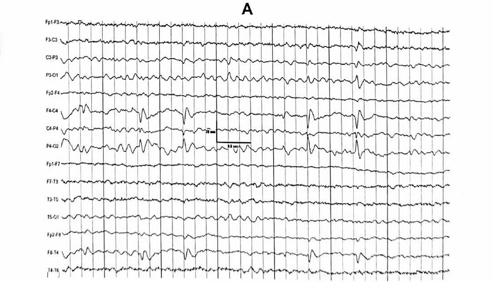
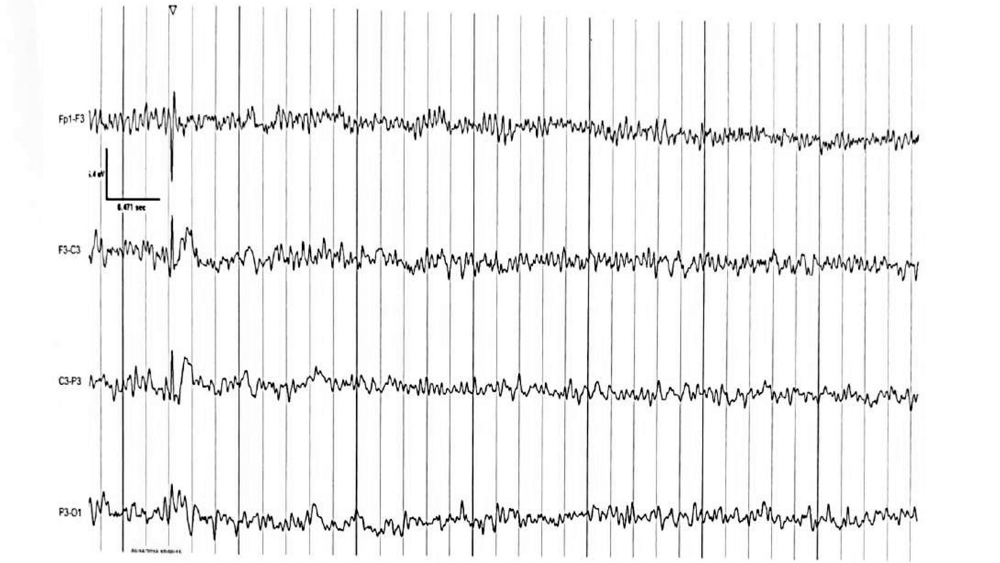
Figure 11.1 C and D
Multiple spikes, and the spike-and-wave complex
Two or more spikes at more than 10 Hz form a multiple spike complex; a spike followed by a slow wave of more than 200 ms forms a spike-and-wave complex.
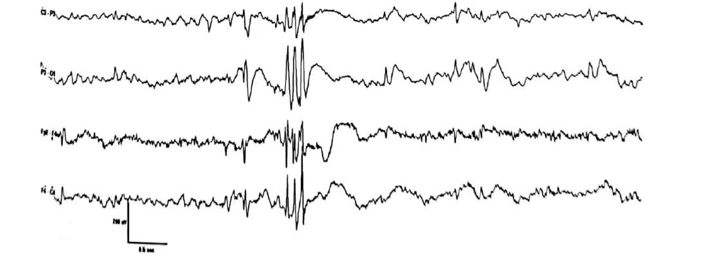
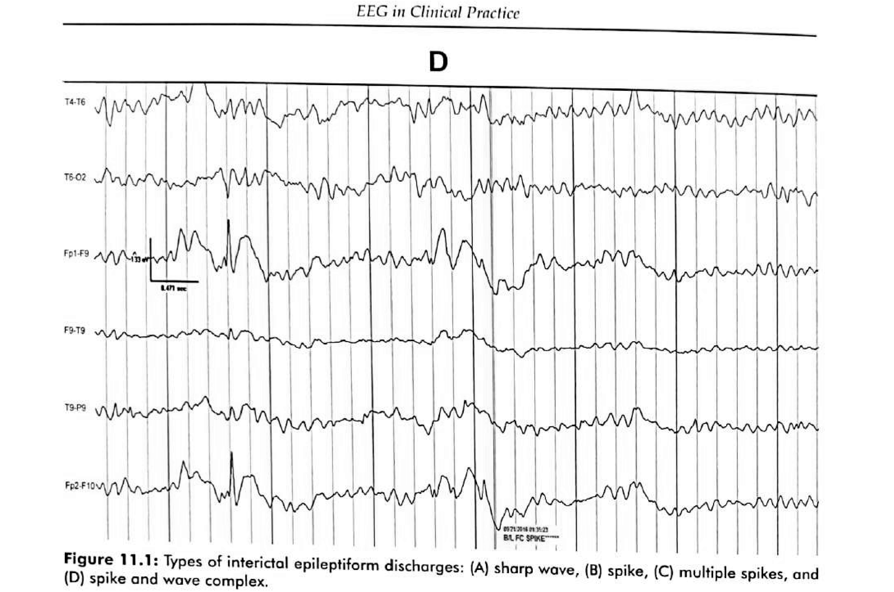
Figure 11.2 A
A gyral source produces a radial dipole
Discharges are surface-negative with a distant positive field. When spikes arise from the surface of a cortical gyrus, the negative field projects to the cortical surface and the positive field projects deeper into the brain.
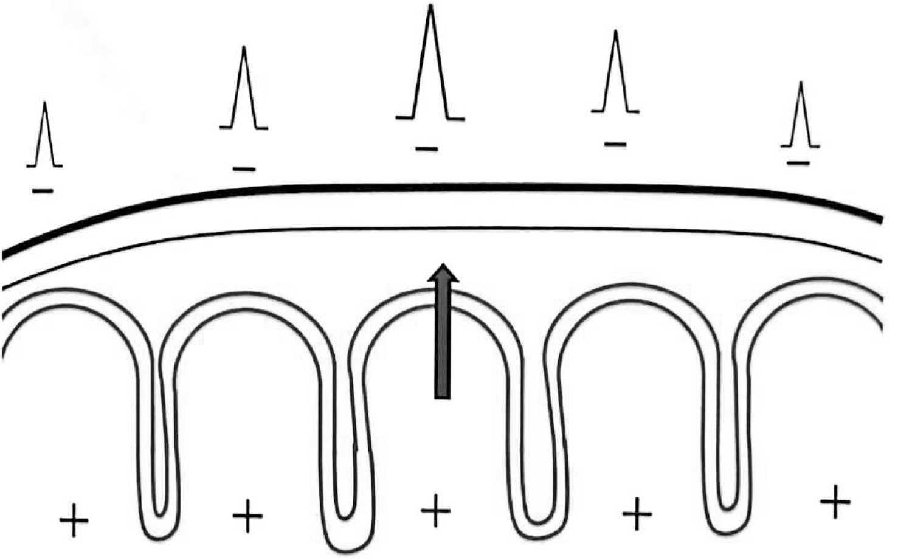
Figure 11.2 B
A sulcal source produces a tangential dipole — and inverts the polarity
This single geometric fact explains several counter-intuitive localisations in the chapter, including the paradoxical lateralisation of mesial frontal foci.
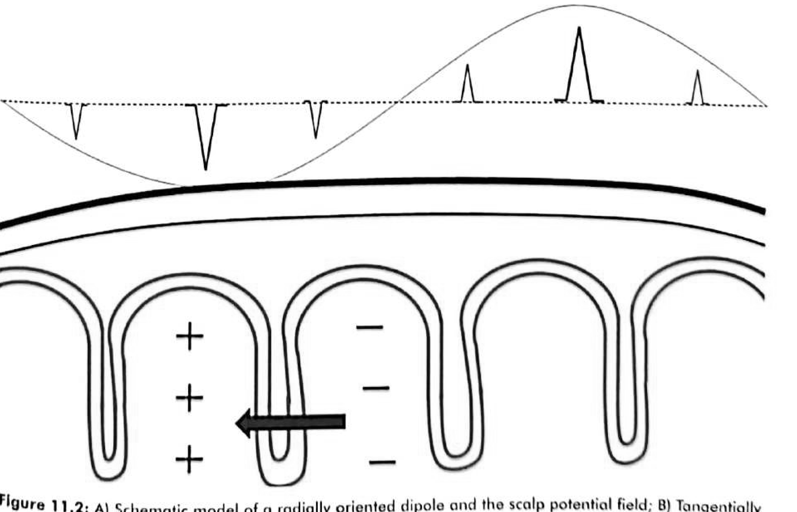
Why it matters
- A source in the wall of a sulcus faces across the head, so its positivity and negativity appear on opposite sides of the source, not above it.
- A midline mesial frontal focus can therefore be recorded with maximal amplitude over the contralateral frontal electrode — paradoxical lateralisation (Figure 11.13).
- It is also why the maximum electronegativity of a temporal spike sits anterior and inferior to the standard 10–20 positions.
- Practical rule: never infer the depth or the side of a generator from scalp voltage alone.
The numbers
Five quantities that decide whether a transient qualifies
Differential diagnosis
Not everything sharp is epileptiform
The chapter’s criteria exist to separate discharges from artefacts and non-epileptiform transients. These are the variants that imitate them most often.
| Variant | Where you meet it | How to tell it apart |
|---|---|---|
| Wicket spikes | Adults, drowsiness and light sleep, temporal | Arciform or notched, 60–200 µV, often in runs; no aftercoming slow wave; attenuate on arousal |
| Small sharp spikes (BETS / BSSS) | Adults, drowsiness, temporal and frontotemporal | Very brief (<50 ms) and low amplitude (<50 µV) with a vertical dipole; no aftercoming slow wave; vanish in deeper sleep |
| 6 Hz spike-and-wave | Adolescents and adults, drowsy or light sleep | Brief generalised burst with a small spike and prominent slow wave; state-dependent — true absence is 3 Hz |
| 14 & 6 Hz positive spikes | Drowsiness, posterior temporal | Positive polarity, age- and state-dependent, no field disruption |
| Midline theta of Ciganek | Drowsiness, maximal at Fz/Cz | 4–7 Hz without evolution or clinical correlate — Figure 11.14 is the worked case |
| Rhythmic mid-temporal theta | Drowsiness, mid-temporal | No frequency evolution, no clinical correlate, disappears on arousal |
A working checklist
Four questions that separate a variant from a discharge
- Is there an aftercoming slow wave? Wicket spikes and small sharp spikes do not have one; true spikes and sharp waves usually do.
- Does the background react? A genuine discharge tends to disrupt or briefly suppress the ongoing rhythm.
- Is the field physiological? Reproducible distribution over a plausible region with a consistent voltage gradient and phase reversal.
- Is it state-dependent? Widespread over-reading comes from drowsiness and light sleep. Wake the patient and look again.
- Does it change with state, or with the montage? An artefact often moves with the reference or disappears when the electrode is reseated.
- Does it fit the clinical story? The ILAE position paper is emphatic: an IED is not a diagnosis of epilepsy, and a variant does not exclude it.
Physiological basis
Why depth determines whether a discharge is ever seen
Part II
Temporal lobe epilepsy
The commonest focal epilepsy in adults, and the one where scalp EEG has been most carefully calibrated — which is exactly why its known failure modes deserve the most attention.
- Mesial versus lateral temporal epilepsy: the full comparison
- Electrode anatomy: T1/T2, basal chains, and sphenoidal electrodes
- Type 1 and Type 2 spikes, TIRDA and TIPDA
- The Ebersole ictal patterns, temporal plus, and false lateralisation
Overview
Temporal lobe epilepsy is the commonest focal epilepsy in adults
- Seizures are divided into those originating from mesial temporal and from lateral (neocortical) temporal structures.
- Mesial temporal lobe epilepsy with hippocampal sclerosis is the best-characterised electroclinical syndrome of all the epilepsies.
- Because the two syndromes differ in pathology, prognosis and surgical target, distinguishing them is the central task of the pre-surgical EEG.
No single characteristic in the mesial-versus-lateral comparison is specific. Only a combination of history, semiology, interictal morphology, ictal pattern and MRI distinguishes the two syndromes.
Why the distinction changes management
- Mesial temporal: few seizures per month, rare secondary generalisation, a long latent period after an early insult — typically febrile seizures.
- Lateral temporal: more frequent seizures, frequent secondary generalisation, and a history more often of trauma or encephalitis.
- The classical MRI substrate differs too: hippocampal sclerosis and mesial lesions on one side, neocortical atrophy or neocortical lesions on the other.
- Mesial temporal sclerosis is the commonest substrate, but glioma, vascular malformation, cortical dysplasia, post-traumatic and post-infectious gliosis, and dual pathology all occur.
Table 11.2 · clinical
Mesial and lateral temporal epilepsy differ clinically before any EEG
| Characteristic | Mesial TLE | Lateral TLE |
|---|---|---|
| Antecedent febrile seizures | More frequent | Less frequent |
| Antecedent trauma or encephalitis | Less frequent | More frequent |
| Latent period between the initial insult and habitual seizures | Long | Short or none |
| Classical aura | Epigastric | Auditory, experiential or visual |
| Motor semiology | Hypomotor | Hypermotor |
| Secondary generalisation | Rare | Frequent |
| Seizure frequency | Few per month | More frequent |
Table 11.2 · EEG and imaging
The electrophysiological half of the same comparison
| Characteristic | Mesial TLE | Lateral TLE |
|---|---|---|
| Interictal epileptiform discharges | Less frequent; Type 1 spikes | More frequent; Type 2 spikes and sharp waves |
| Rhythmic delta activity | TIRDA more frequent | TIPDA more frequent |
| Classical ictal EEG pattern | Type I (rhythmic 5–9 Hz) | Type II (polymorphic 2–5 Hz) |
| Classical MRI finding | Hippocampal sclerosis, or another lesion involving mesial temporal structures | Neocortical atrophy or a lesion in the temporal neocortex; hippocampal atrophy, if present, is less marked |
TIRDA — temporal intermittent rhythmic delta activity. TIPDA — temporal intermittent polymorphic delta activity. Definitions follow in this part.
Semiology
The classical mesial temporal seizure runs through the four A’s
- Seizures occur at roughly two to three per month and seldom generalise.
- They originate from the amygdala, hippocampus, parahippocampal gyrus and entorhinal cortex.
- Ipsilateral upper-extremity automatisms with contralateral dystonic posturing reliably lateralise the side of seizure origin.
- Lateral temporal epilepsy is less well characterised; its commonest auras are vertigo, auditory symptoms and psychical or experiential phenomena, and its seizures are often hypermotor, shorter, and more likely to generalise.
Anatomy
The 10–20 system does not adequately cover basal and anterior temporal cortex
Three facts of electrode geometry explain most of the interictal yield problem in TLE.
Figure 11.3
Basal temporal electrodes sit in the plane of their superior counterpart
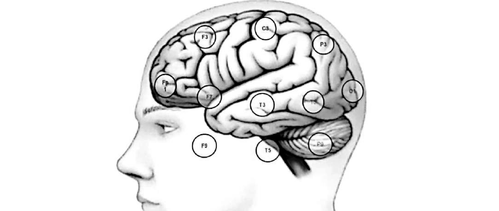
Reading the figure
- The coronal head section shows how far the basal temporal surface sits from any standard 10–20 electrode.
- Adding a basal chain is the cheapest way to sample that surface without an invasive procedure.
- It is also why the chapter defers to Chapter 9 for polarity principles: on basal electrodes, which way a discharge points is not obvious.
Figure 11.4
T1: the Silverman anterior temporal electrode
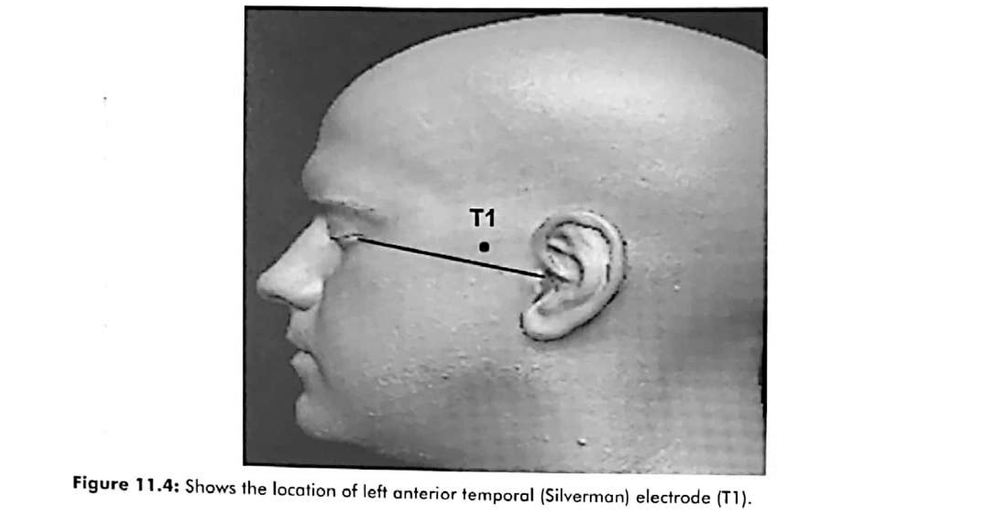
Placement rule
- Sited 1 cm above the junction of the anterior two-thirds and posterior one-third of the line connecting the outer canthus of the eye to the external auditory meatus.
- Non-invasive, inexpensive, and safe — which is why it survives into modern practice while sphenoidal electrodes have largely receded.
- The 2024–2026 literature puts the incremental detection of temporal discharges at roughly 10–20% when T1/T2 is added to a routine montage.
Sphenoidal electrodes
Four indications, and a narrowing role since 2012
The chapter lists the situations in which most centres add sphenoidal electrodes selectively rather than routinely.
The chapter’s four indications
- Routine recording shows bilateral independent temporal discharges without lateralising significance — not more than 75% lateralised.
- The ictal onset is not clearly lateralised to the temporal lobe that carries the MRI abnormality.
- Bilateral hippocampal atrophy on MRI.
- Suspected mesial temporal epilepsy with a normal MRI.
Where practice has moved since
- Sphenoidal electrodes do sample mesiobasal structures more sensitively than surface electrodes, but they give one contact per side and cannot substitute for three-dimensional mapping.
- At most comprehensive centres they are no longer routine; many centres use foramen ovale electrodes or proceed directly to SEEG.
- No strong evidence shows that routine sphenoidal recording improves postoperative seizure freedom.
When non-invasive data are concordant, proceed to surgery. When they are discordant or non-localising, the invasive tool of choice is now SEEG — not a needle electrode.
The central limitation
Chapter 11, on why scalp EEG depicts only a small fraction of mesial temporal IEDs
Figure 11.5
Type 1 spikes phase reverse at the anterior temporal electrodes
In a longitudinal bipolar montage, mesial temporal spikes show phase reversal at F7/F8, with maximum negativity at the anterior temporal and sphenoidal electrodes and a widespread positive field over the contralateral centro-parietal region.
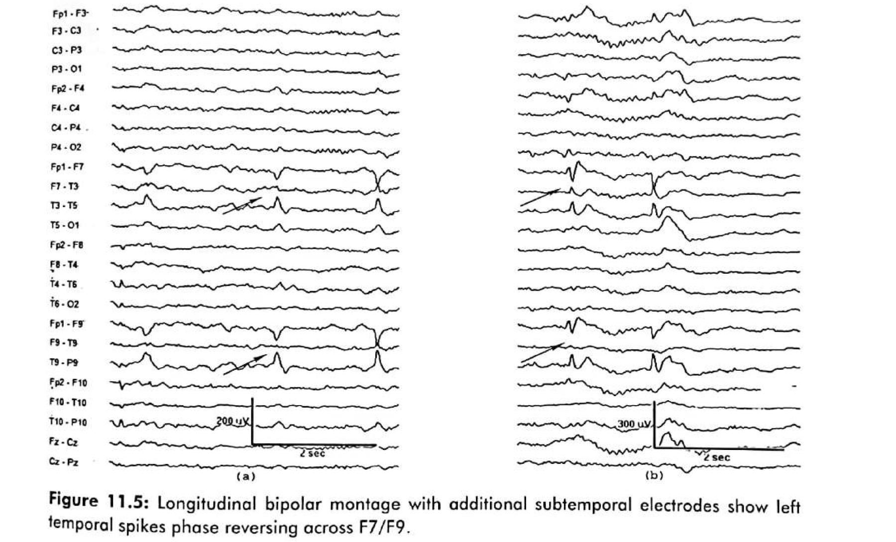
Figure 11.6
Type 1 is focal and steep; Type 2 spreads without a positive field
Type 1 · mesial
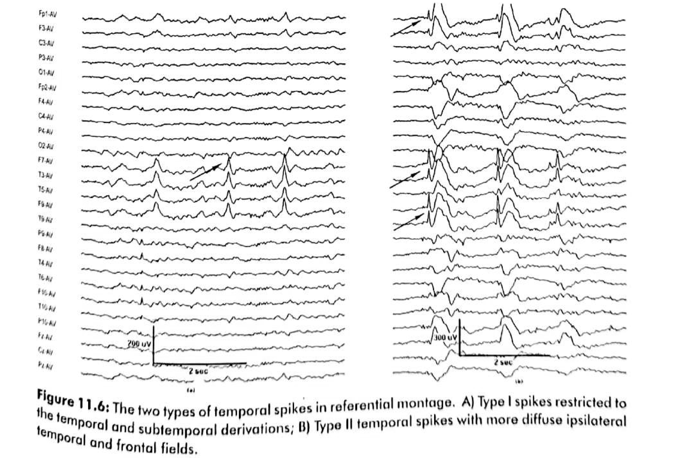
How to tell them apart
- Type 1: sharp contoured, steep gradient, maximum negativity anteriorly, and a positive field over the contralateral centro-parietal region.
- Type 2: a broad negative field extending beyond the temporal region, with no positive field — the signature of a lateral temporal generator.
- Field mapping places the maximum electronegativity of a temporal spike anterior and inferior to the standard 10–20 positions.
- Predominant mid-temporal (T3/T4 → T7/T8) discharges may indicate a larger extra-mesial generator.
Figure 11.7 A and B
Bilateral discharges are common — and the 75% rule decides their weight
About one third of patients with unilateral mesial temporal epilepsy have bilateral independent temporal discharges.
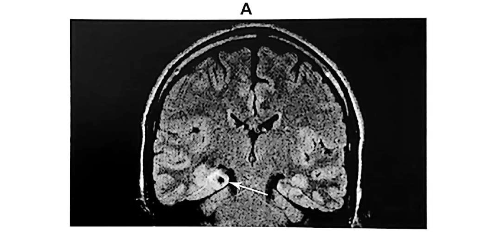
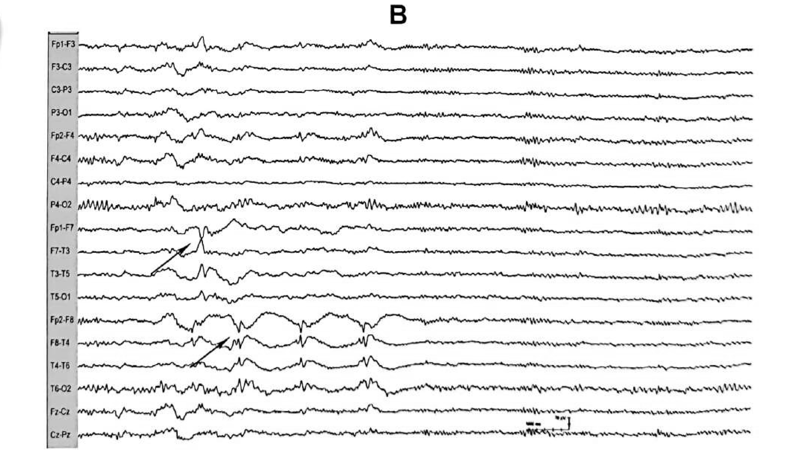
90% of them distributed over the right temporal region.">To carry lateralising significance in the presence of bilateral independent temporal IEDs, at least three-quarters of discharges should localise to one temporal region. Here the combination of a significantly lateralised interictal EEG and a concordant ictal pattern provided sufficient non-invasive data to hypothesise the epileptogenic zone and proceed to right temporal resective surgery.
Figure 11.7 C
The recorded seizure: evolving rhythmic beta to theta
Ictal patterns are sustained rhythmic discharges that evolve in frequency, morphology and distribution — the evolution is the localising signal, not any single frame of it.
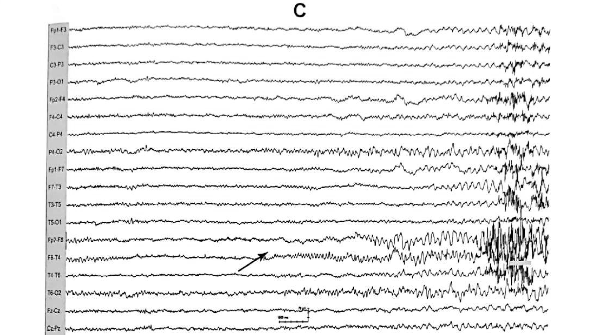
Why evolution matters
- Frequency change over seconds is what separates an ictal rhythm from an interictal run or a state-dependent rhythm.
- The earliest, most restricted expression is the most localising; later spread is not.
- A start–stop–start pattern can occur, and the initial start has a more restricted field than the restart.
Figure 11.8
TIRDA — short runs of rhythmic temporal delta
Defined as short runs of rhythmic, saw-toothed or sinusoidal 1–4 Hz delta activity of 50–100 µV and ≥ 10 seconds, occurring predominantly over the anterior temporal regions.
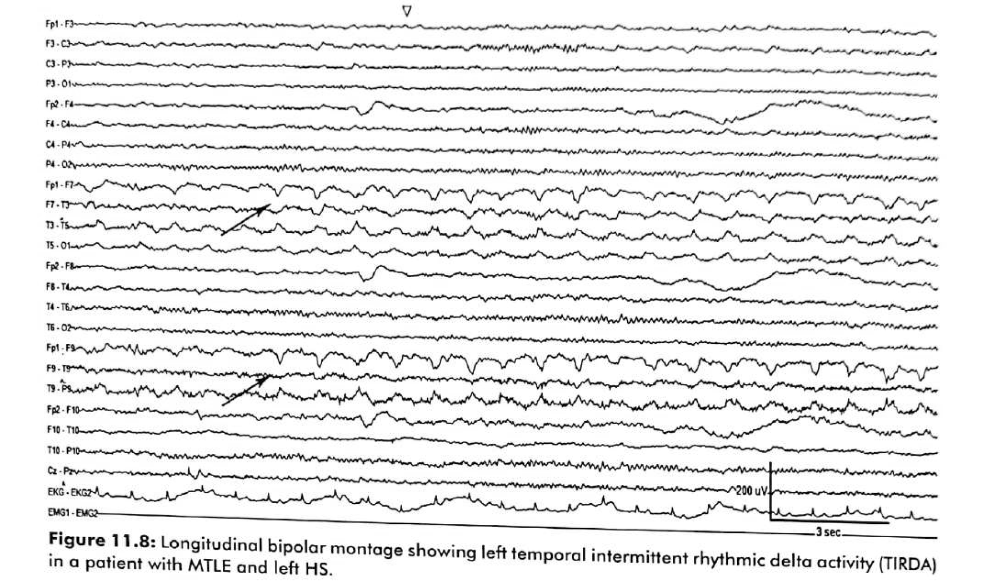
Clinical reading
- The presence of TIRDA has a high correlation with mesial temporal epilepsy with hippocampal sclerosis.
- It generally occurs unilaterally; during drowsiness and sleep bilateral and asynchronous TIRDA may appear.
- TIPDA — the polymorphic variant — is instead more frequent in lateral temporal epilepsy and in temporal epilepsy due to lesions such as low-grade neoplasms.
- Independently reported in 20–40% of temporal lobe epilepsy cohorts, with high specificity and moderate sensitivity; bilateral TIRDA suggests bitemporal or more diffuse involvement.
Compare
TIRDA versus TIPDA: rhythm versus polymorphism
TIRDA · temporal intermittent rhythmic delta
- 1–4 Hz, rhythmic, saw-toothed or sinusoidal
- 50–100 µV, runs of ≥ 10 seconds
- Predominantly anterior temporal
- Usually unilateral; bilateral and asynchronous in drowsiness
- Mesial temporal epilepsy with hippocampal sclerosis
TIPDA · temporal intermittent polymorphic delta
- Polymorphic rather than rhythmic delta
- Less stereotyped from run to run
- More frequent in lateral temporal epilepsy
- Also seen in temporal epilepsy due to low-grade neoplasms
- A clue to a lesion rather than to sclerosis
Table 11.3 · mesial
Ebersole’s temporal ictal patterns: the Type I family
Classified by ictal source. Types I A to I C all favour a mesial temporal onset.
| Type | Ictal EEG pattern | Significance |
|---|---|---|
| I A | Rhythmic 5–9 Hz pattern lasting ≥ 5 seconds, localised principally to subtemporal and temporal electrodes on one side. | Mesial temporal onset |
| I B | Pattern similar to I A but with positive polarity distributed over the vertex or parasagittal region. | Mesial temporal onset |
| I C | The I B pattern followed by the I A pattern. | Mesial temporal onset |
| III | No clear lateralised EEG discharge. | Mesial or lateral temporal onset |
Type III (no clear rhythm) may reflect insufficient net voltage when the seizure-onset zone is confined to the hippocampus, asynchrony between contributing sources, or signal distortion at the scalp.
Table 11.3 · lateral
The Type II family favours a neocortical onset
| Type | Ictal EEG pattern | Significance |
|---|---|---|
| II A | Irregular polymorphic 2–5 Hz lateralised activity, but not localised. | Lateral temporal |
| II B | II A followed within 30 seconds by I A — that is, rhythmic lateralised theta. | Lateral temporal |
| II C | II A or II B preceded by repetitive or periodic interictal epileptiform discharges. | Lateral temporal |
- A unilateral focal temporal or sphenoidal rhythmic theta of 5–7 Hz occurring within the first 30 seconds of clinical onset predicted a mesial temporal focus in nearly 90% of patients in the original series.
- Independently validated, Type I patterns carry a positive predictive value around 90% for mesial onset and Type II around 90% for lateral onset — but with a sensitivity of only about 50–60%.
Figure 11.9 A
Type I A in practice: rhythmic 5 Hz sharp-contoured theta
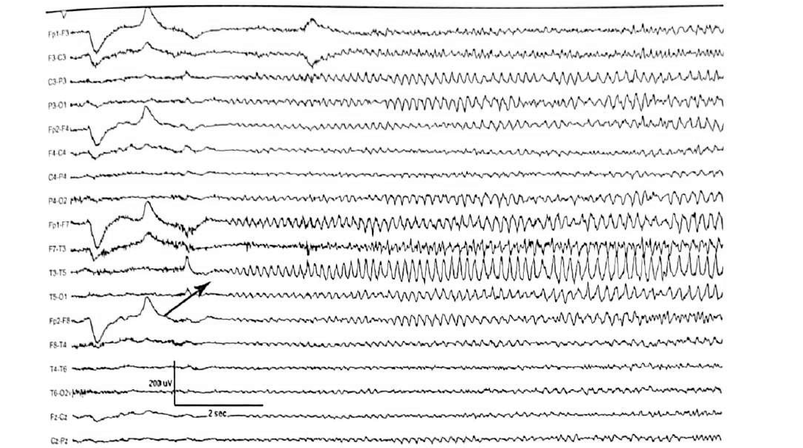
Figure 11.9 B and C
Type II A and Type II C: polymorphic delta before rhythmic fast activity
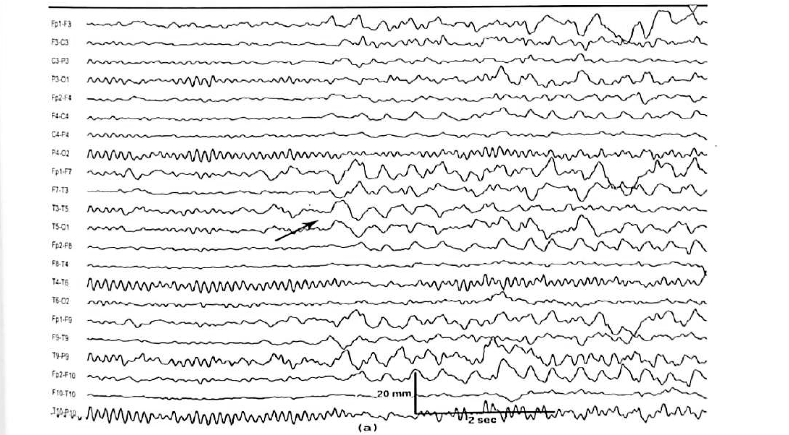
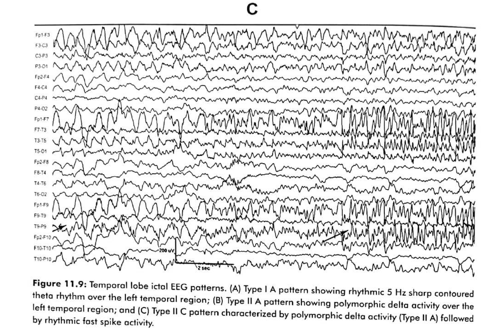
Other ictal findings
Three numbers worth carrying into the reading room
The aura and the simple focal seizures of hippocampal onset usually have no scalp EEG correlate at all — a consequence of inadequate cortical recruitment together with the shielding effect of skull and scalp. A normal EEG during auras is expected, not reassuring.
Pitfalls
Four ways temporal scalp EEG misleads
| Failure mode | What you see | What to do |
|---|---|---|
| Myogenic artefact | Excessive muscle artefact related to oro-alimentary automatisms obscures the record | Sedate or wait out the automatism; consider additional derivations; interpret the pre-automatism epochs |
| No definite change | The seizure produces no interpretable scalp change | Treat as an expected finding in hippocampal onset; rely on semiology, MRI and postictal signs |
| Inter-observer disagreement | Two readers classify the same epoch differently | Use the Ebersole categories explicitly and reach consensus before the surgical meeting |
| False lateralisation | Discharges appear on the side opposite the pathology | Suspect temporal plus, pseudotemporal origin, or severe unilateral hippocampal sclerosis — see the next slides |
Figure 11.10 A and B
Temporal plus epilepsy: a network, not a lobe
Temporal plus epilepsies involve complex epileptogenic networks encompassing the temporal lobe and neighbouring structures — orbito-frontal cortex, insula, frontal and parietal operculum, and the temporo-parieto-occipital junction.
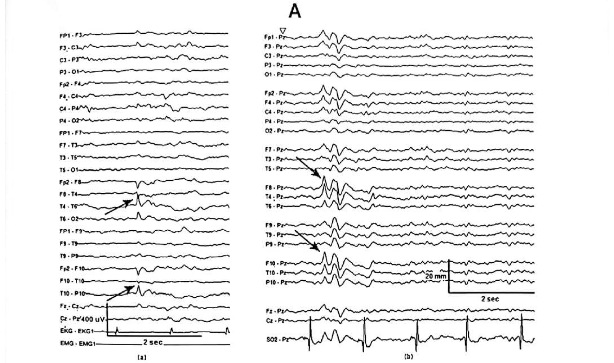
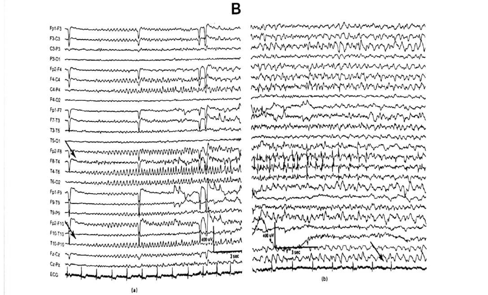
more widespread and seen over the right centro-parietal region as well.">Interictal discharges in temporal plus epilepsy are often bilateral or pre-central, and the ictal EEG may show early involvement of frontal, temporo-parietal or central regions. Distinguishing temporal, temporal-plus and pseudotemporal syndromes often requires invasive monitoring.
Figure 11.10 C and D
The same patient: evolving bradycardia and sinus arrest
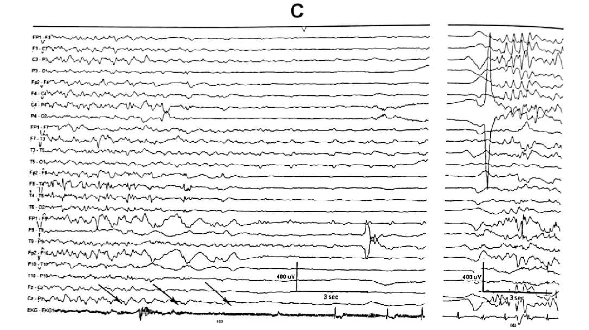
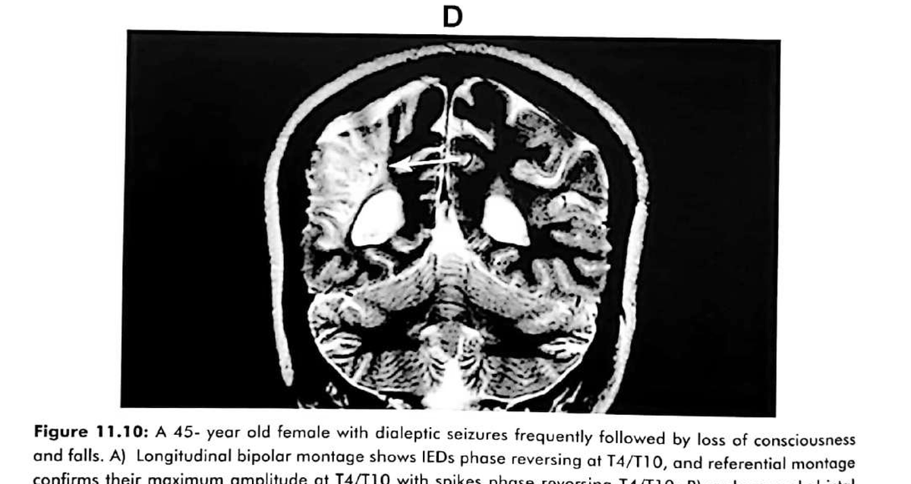
This patient also illustrates the importance of recording and carefully reviewing the ECG during seizures. The EEG change here is a consequence of the cardiac arrest, not a seizure pattern.
Table 11.4
Features atypical of mesial temporal lobe epilepsy
When these appear in a patient carrying a diagnosis of mesial temporal epilepsy, suspect temporal plus or pseudotemporal epilepsy.
Clinical features
- Sensory auras
- Complex visual auras
- Auditory auras
- Hyperkinetic seizures
- Simple motor seizures
EEG and imaging findings
- No interictal epileptiform discharges
- Extratemporal IEDs
- Non-lateralising ictal EEG patterns
- Normal MRI
- Contra- or extratemporal PET hypometabolism
Hypothalamic hamartoma and periventricular nodular heterotopia can simulate the electroclinical features of temporal lobe epilepsy.
Figure 11.11
Burned-out hippocampal syndrome: scalp EEG lateralised to the wrong side
A 32-year-old woman with drug-resistant seizures of temporal lobe semiology. MRI showed atrophy of the left hemisphere with marked left hippocampal atrophy; IEDs were seen exclusively over the right temporal region.
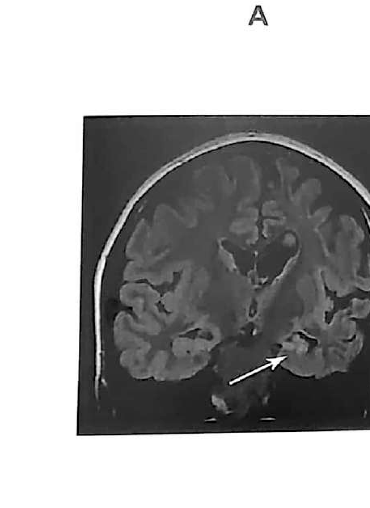
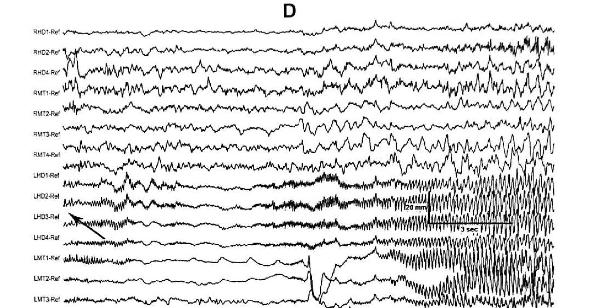
left hippocampus. LHD — left hippocampal depth; RHD — right hippocampal depth; LMT — left mesial temporal strip; RMT — right mesial temporal strip.">Postictal EEG
When the ictal onset is unclear, the postictal record still localises
Regional postictal slowing is seen in more than two-thirds of patients with temporal lobe epilepsy.
- Regional postictal slowing over the ipsilateral temporal region is the most useful lateralising postictal sign — reported at roughly 70–90% concordance in selected series.
- Focal background suppression can also lateralise, but it is less common and less sensitive than slowing.
- Postictal spikes may increase ipsilaterally and support lateralisation.
- Bilateral or diffuse slowing has low localising value — common after secondary generalisation, multiple seizures, medication effects or encephalopathy.
- Postictal generalised EEG suppression after a generalised tonic–clonic seizure is not a lateralising sign: it is a marker of seizure severity and of SUDEP risk.
- Keep the patient on the monitor for at least 10–15 minutes after a seizure — the postictal record is data, not downtime.
Synthesis
A localising sequence for suspected temporal lobe epilepsy
The pattern so far
The same discipline is required in the frontal lobe — where the yield is lower still
Part III
Frontal lobe epilepsy
One quarter of refractory focal epilepsy is frontal, and it is the lobe where scalp EEG is least reliable — which makes knowing the failure modes the entire skill.
- Three semiological groups and the rostro-caudal gradient
- Inaccessible cortex and secondary bilateral synchrony
- Yield by subtype, and why transverse montages are mandatory
- Midline theta versus the Ciganek rhythm; paradoxical lateralisation
Overview
One quarter of refractory focal epilepsy is frontal
Semiologically, frontal lobe seizures group into three: focal clonic seizures, bilateral asymmetric atonic seizures, and complex motor seizures.
| Seizure group | Semiology | What it localises |
|---|---|---|
| Focal clonic | Focal clonic motor activity on the contralateral body | Ictal onset zone at or close to the primary motor area |
| Bilateral asymmetric atonic / tonic | Classically short (<30 s) bilateral asymmetric tonic posturing with abduction or elevation of the arms and flexion of the elbows, with or without preserved consciousness | Symptomatogenic zone in the supplementary sensory-motor area (SSMA) — but the ictal onset may be mesial frontal, basal frontal or even mesial parietal |
| Complex motor | Integrated, often nocturnal hypermotor behaviour | More anterior symptomatogenic zones produce integrated behaviour; more posterior zones produce elementary motor signs |
Anatomical logic
Semiology tracks the rostro-caudal organisation of the frontal lobe
- The more anterior the symptomatogenic zone, the more likely the seizure produces integrated behaviour — complex motor activity, vocalisation, preserved awareness early on.
- A more posterior zone produces progressively more elementary motor signs, ending in focal clonic activity at the primary motor area.
- Read this as a gradient, not as a map: the same clinical sign can arise from several depths along it.
Because semiology gives a position along a gradient rather than a target, the EEG request should ask for lateralisation and lobar confirmation, not for a precise gyral localisation.
Where the scalp cannot reach
- Orbitofrontal cortex — far from any surface electrode.
- Medial frontal cortex, including the cingulate gyrus and the supplementary sensory-motor area.
- The chapter’s conclusion is blunt: missing interictal discharges or ictal discharges is common, and even when obtained they may be diffuse and non-localising.
Secondary bilateral synchrony
About two thirds of frontal lobe epilepsy patients show it
Especially when the origin is mesial frontal.
Table 11.5
Pitfalls in interpreting scalp EEG in frontal lobe epilepsy
Interictal epileptiform discharges
- None — the default finding
- Contralateral to the epileptogenic focus
- Midline (Fz / Cz)
- Multifocal
- Generalised
Ictal patterns
- None
- Non-localising
- Falsely lateralising
- Non-lateralising
- Obscured by artefact
Yield
Dorsolateral foci are rewarding; mesial and basal foci are not
In mesial frontal epilepsy it is common to have no interictal discharges at all, and when present they may be non-localised or falsely lateralised to the opposite frontal region — a consequence of the tangential dipole geometry shown in Figure 11.2 B.
Figure 11.12 A and B
Nocturnal hypermotor seizures: spikes reversing at C4/Cz
A 24-year-old woman with a history of drug-resistant nocturnal hypermotor seizures. Frequent runs of spikes phase reverse across C4/Cz.
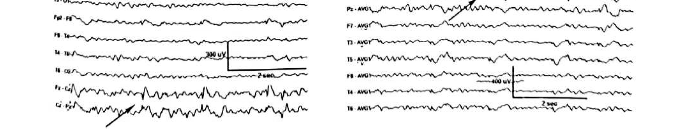
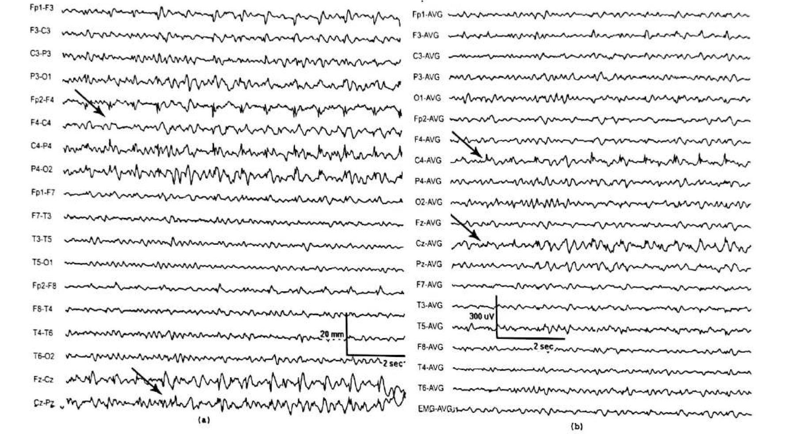
Figure 11.12 C and D
The spikes potentiate into a seizure, and MRI shows the dysplasia
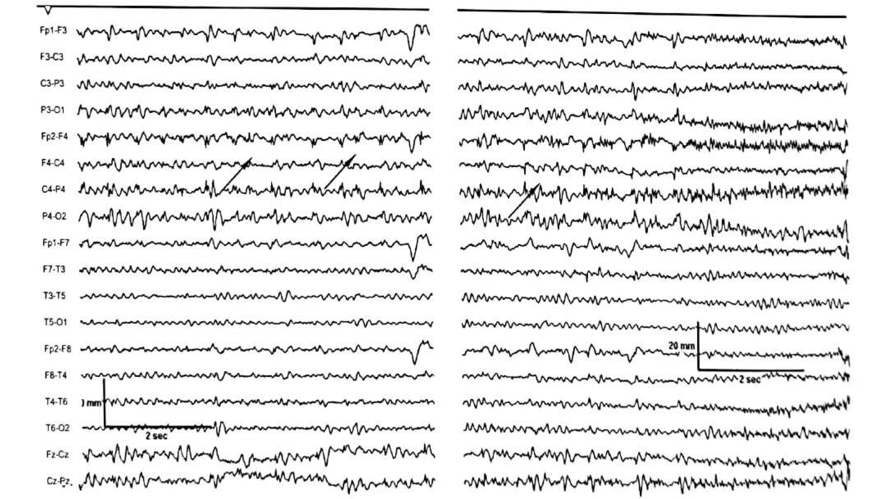
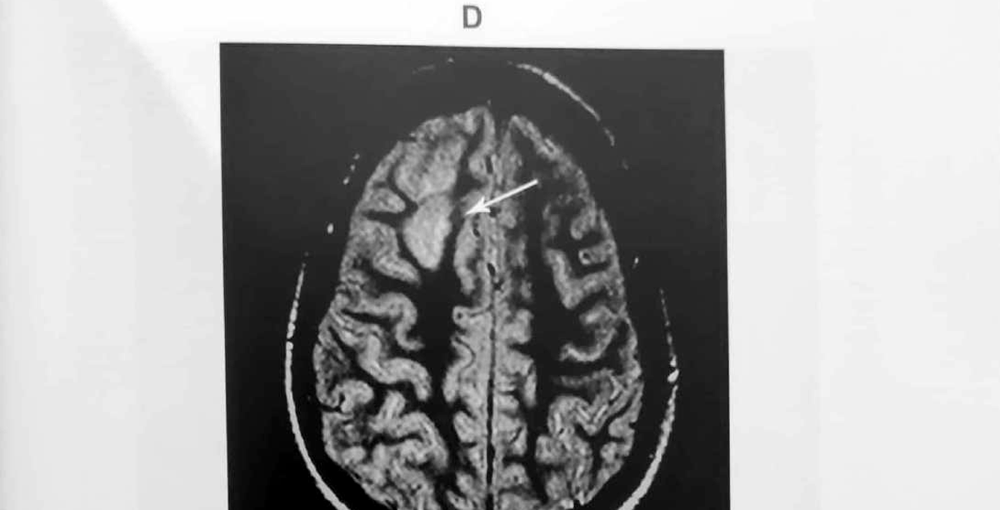
Supplementary sensory-motor area
SSMA seizures demand transverse montages and midline electrodes
- Nearly half of SSMA seizures have midline (Fz/Cz), fronto-central (F3/C3 or F4/C4) or frontal (F3/F4) onset.
- EEG analysis with transverse montages and using midline electrodes — Fz, Cz and Pz — is therefore essential.
- Bilateral frontal synchronous discharges are characteristic but not specific for mesial frontal epilepsy.
- When present, rhythmic midline theta activity is considered a neurophysiological marker for mesial frontal epilepsy.
Where the 2024–2026 literature lands
- Midline theta remains a clue, not a map: it raises suspicion of a mesial frontal or SSMA focus but lateralises poorly.
- It can also occur with lateral frontal, temporal or generalised epilepsies — and as a drowsiness variant.
- The decisive recent work is on HD-EEG source imaging and SEEG validation of scalp biomarkers, not on a new standalone scalp sign.
Figure 11.14
Ciganek’s midline theta versus genuine midline spikes
A 29-year-old woman referred with a diagnosis of non-epileptic spells. The drowsy record initially looked like the benign midline theta rhythm of Ciganek — until sleep recording revealed spikes at the central region.
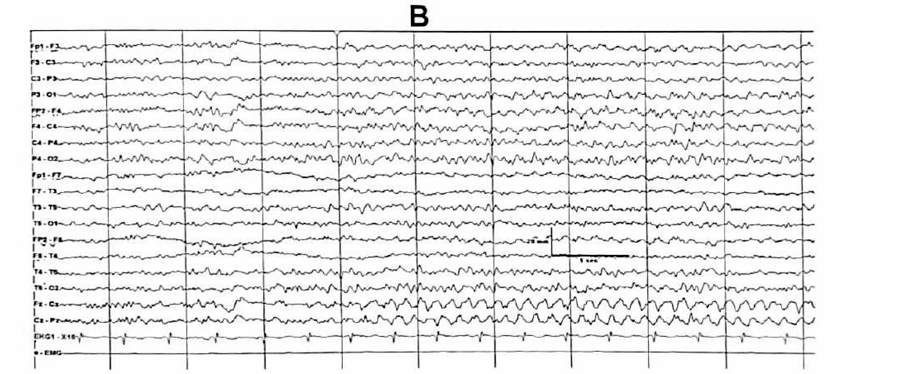
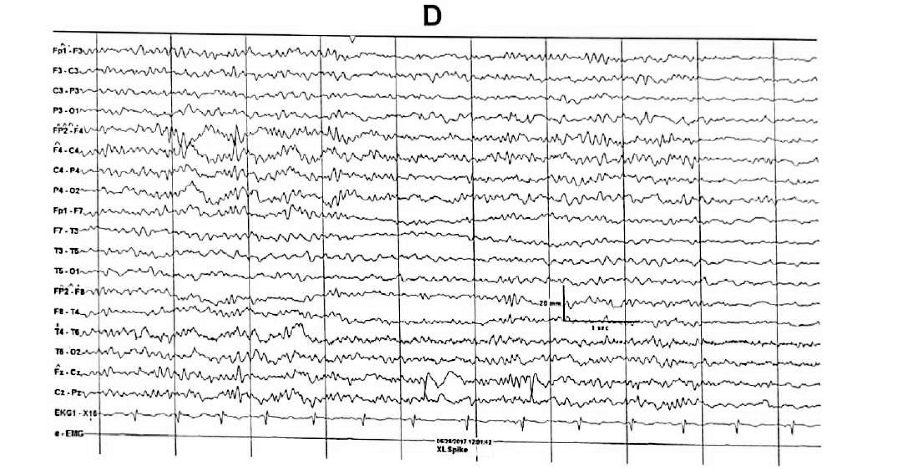
The two could be distinguished by the spikes’ sharp configuration, the presence of aftercoming slow waves, and their lack of expression over C3 and C4. The case is the chapter’s argument for obtaining a sleep recording before calling a midline rhythm benign.
Figure 11.13
Paradoxical lateralisation with a midline frontal lesion
A patient with a mesial frontal lobe lesion whose interictal discharges phase reverse at Cz and F4 — midline and right.
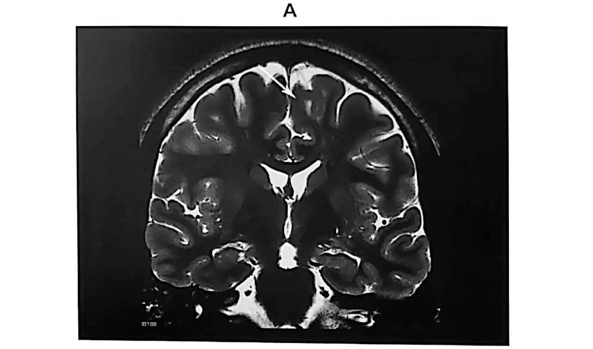
left superior frontal gyrus close to the midline.">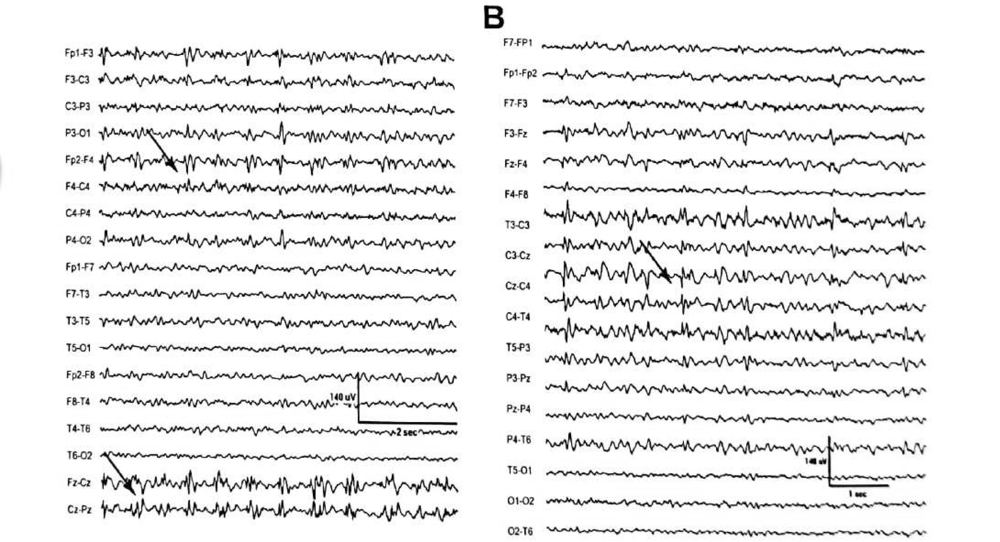
right — despite a left-sided lesion.">This is the practical payoff of tangential dipole geometry: a sulcal or midline source projects its positive and negative fields to opposite sides, so the maximal scalp amplitude can sit contralateral to the generator.
Synthesis
A localising sequence for suspected frontal lobe epilepsy
Part IV
Parietal and occipital
Two lobes where scalp EEG is at its least trustworthy — and where being explicit about that unreliability is the most useful thing a reader can do.
- Parietal lobe epilepsy: non-localising, falsely localising, or silent
- Occipital lobe epilepsy: 5–10% of all epilepsies, one fifth of localised onsets
- Why OIRDA is a posterior dysrhythmia, not a localising sign
Parietal lobe epilepsy
Scalp EEG is often not helpful — and the chapter says so plainly
- The EEG is often non-localising and frequently falsely localising.
- No interictal discharges may be seen at all.
- Secondary bilateral synchrony occurs in about one third of patients.
- IEDs may appear in frontal, temporal or occipital regions rather than parietally.
- In symptomatic cases, localised slow waves may be the only interictal abnormality — so slow activity deserves as much attention as spikes here.
- Ictal findings, when focal, may appear over centro-parietal or posterior head regions.
- The practical implication: in suspected parietal epilepsy, a normal or misleading EEG should not delay multimodal evaluation.
Figure 11.15 A and B
A parietal dysplasia: periodic multiple spike complexes
A 29-year-old woman with seizures characterised by a painful sensation followed by dystonic posturing of the right upper limb since the age of 7.
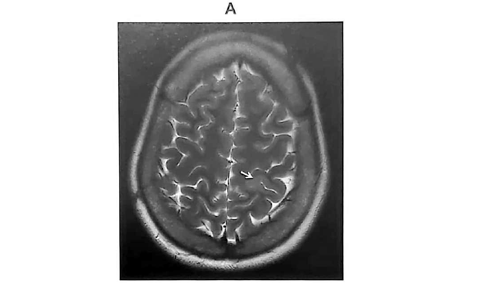
left parietal lobe.">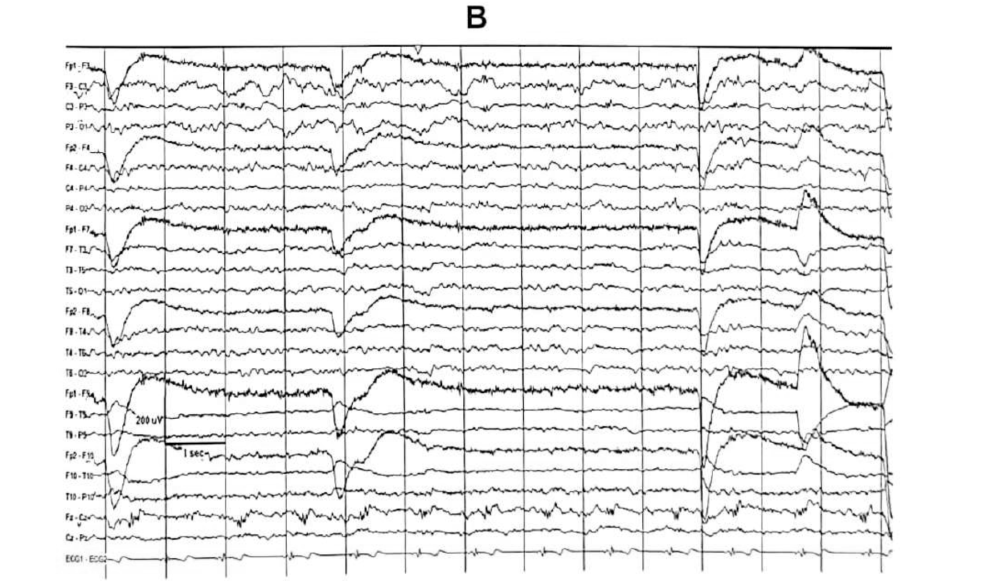
Figure 11.15 C and D
The same seizure progresses to 9 seconds of asystole
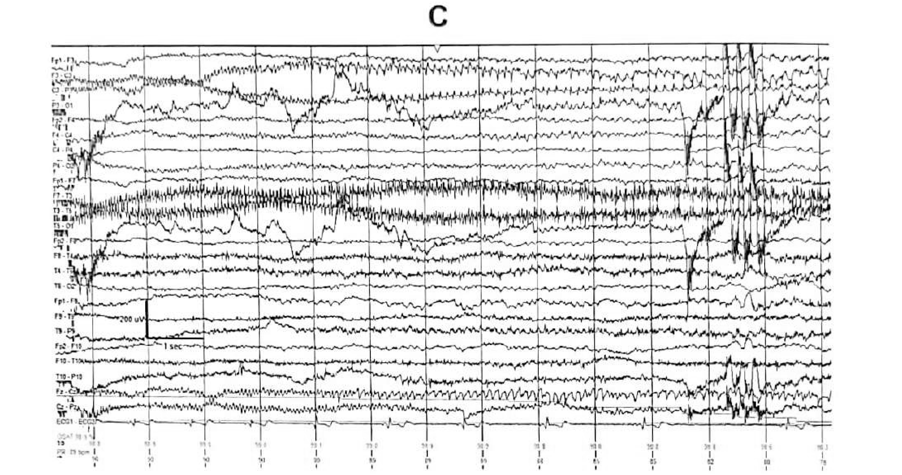
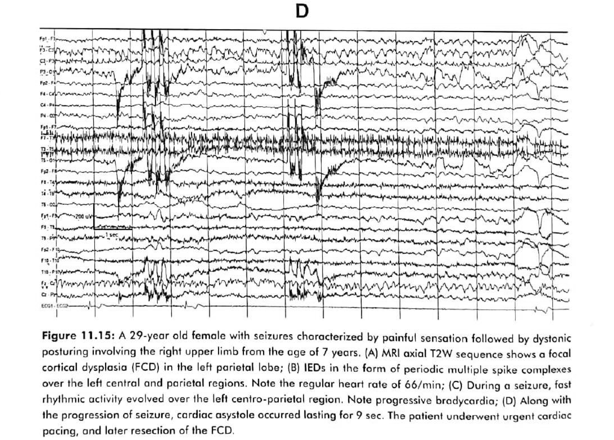
The patient underwent urgent cardiac pacing, and later resection of the focal cortical dysplasia. Note that this is a parietal focus producing a cardiac arrest — ictal asystole is not confined to the temporal lobe.
Occipital lobe epilepsy
OLE accounts for 5–10% of all epilepsies
Symptomatic causes
- Focal cortical dysplasia
- Low-grade tumours
- Vascular malformations
- Sturge–Weber syndrome
- Trauma, birth asphyxia, encephalitis, mitochondrial disorders
A common cause in developing countries
- Occipital gliosis, often bilateral, secondary to neonatal hypoglycaemia is a common cause of drug-resistant occipital lobe epilepsy.
- Idiopathic occipital lobe epilepsies are age-related syndromes covered in Chapter 10; the adult presentation is usually symptomatic.
In symptomatic occipital lobe epilepsy the background is usually abnormal: lateralised posterior slowing, unilateral voltage attenuation, an absent or asymmetric photic response, or asymmetric POSTS.
Occipital lobe epilepsy · interictal
IEDs stay occipital in only one fifth of patients
- In developmental malformations, the IEDs consist of frequent spikes or low-amplitude fast or sharp activity resembling ictal activity.
- In destructive lesions such as gliosis and porencephaly there may be a paucity of IEDs, with a tendency for them to appear over the posterior temporal region.
Occipital lobe epilepsy · ictal
The commonest scalp onset is regional, not focal
- An ictal onset localised to the occipital region is seen in only one fifth of patients with occipital lobe epilepsy.
- The commonest type of scalp ictal onset is regional rather than focal, involving the posterior temporo-occipital region.
- False localisation or lateralisation may occur in one third of occipital lobe epilepsy patients.
Where the modern literature adds value
- Unilateral occipital spikes and sharp waves are more specific than any rhythmic delta pattern.
- Fixation-off sensitivity — occipital paroxysms appearing with eye closure and disappearing with eye opening — is more specific for occipital involvement.
- Ictal onsets often begin with low-voltage fast activity, evolving into rhythmic alpha or beta, then theta or delta in occipital leads.
- Rapid propagation to temporal, parietal, frontal or contralateral cortex is the norm — hence the false localisation rate.
Figure 11.16
Bilateral parieto-occipital gliosis and ulegyria
A 25-year-old man with poor vision and drug-resistant epilepsy from early childhood.
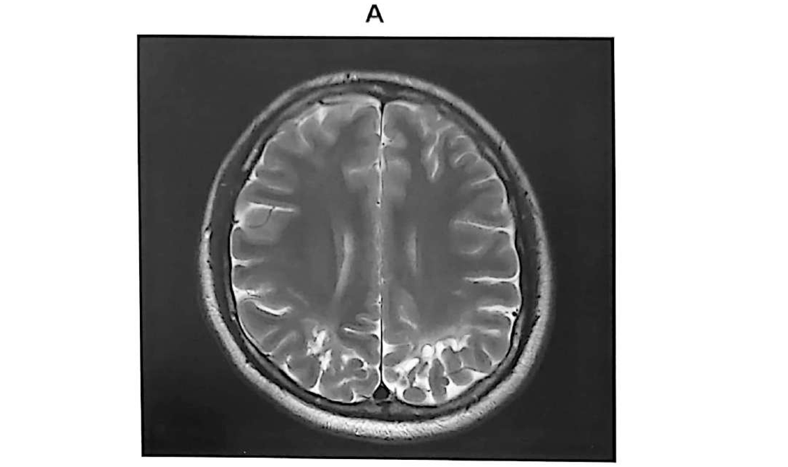
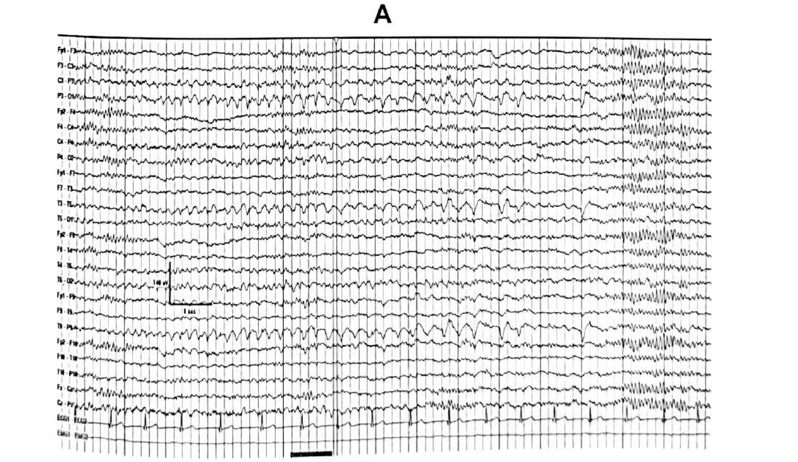
Figure 11.17
Post-encephalitic occipital epilepsy: delta that acquires a spike
A 17-year-old girl with post-encephalitic drug-resistant epilepsy.
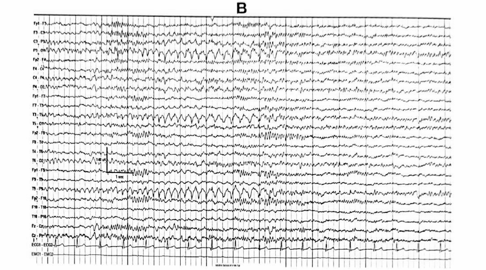
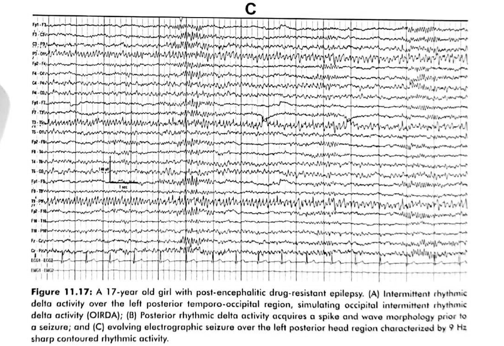
OIRDA
OIRDA alone is not a localising sign
Occipital intermittent rhythmic delta activity is 2–4 Hz high-amplitude rhythmic delta, maximal occipitally, often bilateral and synchronous — and it is not truly epileptiform, because it has no spike or sharp component.
Where it appears
- Occipital lobe epilepsy
- Generalised epilepsies, including childhood absence epilepsy
- Metabolic and toxic encephalopathy
- Structural posterior lesions
- Migraine, head trauma, and other non-specific states
When it gains value
- Bilateral OIRDA has poor localising value — it suggests diffuse or bilateral posterior dysfunction.
- Unilateral OIRDA may have moderate lateralising value, but does not reliably localise to the occipital lobe rather than posterior temporal or parietal cortex.
- Localising value rises when OIRDA is strictly unilateral, maximal occipitally, accompanied by concordant occipital spikes, and associated with a structural lesion.
Part V
The heart
The chapter gives cardiac rhythm a section of its own, and the 2024–2026 guidelines have repositioned what pacing can and cannot do about it.
- Ictal tachycardia, bradycardia and asystole
- Why the ECG channel is a diagnostic instrument, not decoration
- What pacing achieves, and what SUDEP prevention actually rests on
Cardiac rhythm during focal seizures
Cardiac change is common even without convulsive activity
It is important to identify ictal bradycardia and asystole because patients with such rhythm disturbances will require urgent cardiac pacing to prevent sudden unexpected death. Continuous ECG monitoring with EEG — reviewed before, during and after each seizure — cannot be overemphasised.
Ictal bradycardia and asystole
Mechanism, evaluation, and what changed in management
SUDEP
Prevention rests on seizure control, not on pacing
Where the risk sits
- Generalised tonic–clonic seizures, especially nocturnal
- Uncontrolled or refractory epilepsy; early onset; polytherapy
- Male sex, young adulthood, prone position during the seizure, lack of supervision
- Ictal asystole or bradycardia is a marker of severe epilepsy and autonomic dysfunction — but SUDEP usually follows a generalised tonic–clonic seizure
What the guidelines actually say
- The 2017 AAN/AES practice guideline remains the reference; the 2023 ILAE/AES consensus is the most recent comprehensive international statement, and NICE NG217 (updated 2024) reinforces counselling.
- Discuss SUDEP risk with patients and caregivers.
- Optimise seizure control, especially of generalised tonic–clonic seizures; consider surgery, rescue benzodiazepines and neuromodulation.
- Nocturnal supervision and seizure-detection devices for high-risk patients; avoid prone positioning; treat sleep apnoea.
- Do not use cardiac pacing routinely to prevent SUDEP — consider it only for documented symptomatic ictal asystole.
Part VI
The evidence since
The chapter’s localising heuristics have largely survived. What has changed is the framework around them, and the arrival of tools that do what scalp EEG alone cannot.
- Twelve positions, and how each one has moved
- HD-EEG source imaging, 7T MRI, SEEG, and automated detection
- Surgery: highly effective, and badly underused
- The statements to verify before you present any of this
Twelve positions
What the chapter states, and where the literature has moved
Part one of two. Each row names the direction of travel, not merely a citation.
| # | The chapter says | 2024–2026 status | Direction |
|---|---|---|---|
| 1 | IFSECN criteria define an interictal discharge (Table 11.1) | The ILAE Task Force position paper (2024) uses mandatory plus supportive features, and states that “epileptiform” is not a synonym for “epilepsy” | Reframed |
| 2 | Sphenoidal electrodes have a higher mesial yield, with four selective indications | The yield advantage stands, but use is niche and declining; SEEG is the main invasive tool and routine sphenoidal use has no proven postoperative benefit | Narrowed |
| 3 | Ebersole Types I and II classify temporal ictal onset | Validated, but sensitivity is only about 50–60% and propagation can invert the pattern | Softened |
| 4 | TIRDA strongly correlates with mesial temporal epilepsy plus hippocampal sclerosis | Supported: high specificity, moderate sensitivity, not pathognomonic, with intracranial evidence for a mesial temporal generator | Confirmed |
| 5 | At least 75% lateralisation is required with bilateral independent temporal IEDs | Supported; above 90% is more predictive; never used in isolation | Confirmed |
| 6 | Rhythmic midline theta marks mesial frontal epilepsy | Still a clue rather than a map: poor lateralisation, and it must be separated from the Ciganek rhythm and from non-frontal sources | Softened |
Twelve positions · continued
Six more positions, and one entirely new toolkit
| # | The chapter says | 2024–2026 status | Direction |
|---|---|---|---|
| 7 | Occipital onset and OIRDA are frequently non-localising | OIRDA alone remains unreliable; fixation-off sensitivity and unilateral occipital spikes are more specific | Refined |
| 8 | Temporal plus and pseudotemporal epilepsy require invasive monitoring | Quantified: roughly 10–30% of drug-resistant temporal lobe epilepsy, with 30–50% seizure freedom after tailored surgery versus 60–80% for pure temporal lobe epilepsy | Quantified |
| 9 | Ictal bradycardia and asystole need urgent pacing to prevent sudden death | Treat the seizures first; pacing is Class IIb for injury prevention and is not proven to prevent SUDEP | Repositioned |
| 10 | Scalp EEG localises focal epilepsy with important limitations | HD-EEG electrical source imaging is now an established adjunct: pooled sensitivity about 80–90%, specificity about 70–80% | New tool |
| 11 | IEDs are identified by visual analysis | Deep-learning detection performs well retrospectively but prospective multicentre validation remains limited as of 2025–2026 | New tool |
| 12 | MRI is the structural reference standard | 7T MRI detects a new lesion in roughly 20–50% of patients labelled MRI-negative on 1.5T or 3T | New tool |
Tool 1 · HD-EEG
Electrical source imaging turns the scalp field back into a location
High-density EEG with source imaging is now a routine adjunct in pre-surgical evaluation, most valuable exactly where the chapter is weakest: the MRI-negative or discordant patient.
The benchmark meta-analysis remains Sharma et al., Neurology 2019. The evidence base is dominated by retrospective, single-centre studies with heterogeneous reference standards, and there are no randomised trials. Concordance supports surgery; discordance should prompt intracranial EEG rather than reassurance, and a negative source imaging study does not exclude focal epilepsy.
Tool 2 · 7T MRI
A fifth to a half of “MRI-negative” patients have a lesion after all
Detection
- In focal epilepsy labelled negative at 1.5T or 3T, 7T identifies a new structural lesion in roughly 20–50% overall.
- For focal cortical dysplasia specifically, reported yield is often 30–60%, and higher still when 7T is combined with quantitative post-processing.
- It is best at revealing subtle FCD II features: cortical thickening, grey–white matter blurring, the transmantle sign, and bottom-of-sulcus dysplasia.
- FCD type I and very small or network-level abnormalities remain hard to detect.
Outcome and limits
- When 7T finds a lesion that is concordant with the electroclinical data and is completely resected, seizure freedom is commonly reported around 50–80% at one to two years.
- Incomplete resection, or over-interpretation of a false-positive 7T finding, leads to poorer outcomes.
- A negative 7T does not exclude focal cortical dysplasia, and 7T does not replace EEG, SEEG or multimodal evaluation.
Tool 3 · SEEG
Temporal plus epilepsy, now quantified
- Temporal plus epilepsy is estimated at roughly 10–30% of drug-resistant temporal lobe epilepsy — higher, around 30–40%, in SEEG series, with pooled estimates near 25–35% of operated patients.
- Seizure freedom after tailored surgery is 30–50%, against 60–80% for pure temporal lobe epilepsy.
- Outcome is worse still — around 20–35% — when the insula or posterior cingulate is involved.
- SEEG maps the three-dimensional epileptogenic network and separates the epileptogenic zone from propagation.
- It identifies insular, orbitofrontal, temporoparietal and posterior cingulate involvement, and guides tailored resection.
- It also enables radiofrequency thermocoagulation, and informs MR-guided laser interstitial thermal therapy in selected patients.
- The practical message: a normal-looking scalp EEG plus a temporal MRI lesion does not rule out a temporal plus network — and failed temporal resection is its signature.
Tool 4 · Automated detection
Deep learning reads spikes well retrospectively — the open question is the clinic
By 2025–2026 the field has moved from “can AI detect spikes?” to “does AI-assisted reading improve diagnostic yield and management?”
Where it stands
- CNN, CNN–LSTM, transformer and graph architectures report sensitivities around 70–95% and specificities around 80–98% — with wide variation in false alarms.
- External validation often shows a performance drop from domain shift, label noise and differing artefact burdens.
- Commercial spike-detection modules exist, but regulatory claims differ by country and version, and most evaluate workflow rather than hard outcomes.
- EEG foundation models and self-supervised pretraining are the most promising route to generalisation with less labelled data.
What a credible validation needs
- A locked algorithm tested on unseen data
- Multicentre external validation across ages, syndromes and montages
- A blinded expert reference standard with adjudicated disagreements
- Event-level and per-patient metrics, plus false positives per hour
- Clinical utility endpoints: read time, diagnostic yield, and effect on management
The consequence
Epilepsy surgery is highly effective — and severely underused
Outcomes
- Temporal lobe resection, especially for unilateral hippocampal sclerosis: 60–80% seizure freedom at one to two years, 50–60% at five years.
- Extratemporal lesional resection (dysplasia, cavernoma, tumour): 55–70% at one to two years.
- Non-lesional focal resection: 30–50% at one to two years.
- Successful surgery reduces mortality and SUDEP risk and is often cost-effective against continued medical therapy.
The referral gap
- Only about 1–2% of eligible drug-resistant patients undergo surgery annually in the United States, and far fewer in low- and middle-income countries.
- Median time from epilepsy onset to surgery is often 15–20 years; many patients are never referred.
- Guidelines recommend referral after two adequately chosen antiseizure medications fail — yet only about 10–20% of such patients are referred in practice.
- This is the strongest argument for the whole deck: the localising EEG exists to identify surgical candidates, and the bottleneck is recognition, not technique.
Verify before you present
Chapter-derived statements — the numbers most easily mangled
Every row is checkable against the source page image. Prefer the figure over the OCR transcript when a number is on screen.
| Statement | Value | Source |
|---|---|---|
| Duration of a spike / a sharp wave | 20–70 ms / 70–200 ms | Table 11.1 |
| Cortical area needed for a scalp-visible discharge | about 6 cm² | Physiological basis |
| Lateralisation required with bilateral independent temporal IEDs | at least 75% | Chung 1991; Krendl 2008 |
| Proportion of unilateral MTLE with bilateral independent temporal IEDs | about one third | Interictal EEG |
| TIRDA — frequency, amplitude, minimum duration | 1–4 Hz, 50–100 µV, ≥ 10 s | Reiher 1989 |
| Type I A ictal pattern — frequency and minimum duration | 5–9 Hz, ≥ 5 s | Table 11.3 |
| Type II A ictal pattern | polymorphic 2–5 Hz | Table 11.3 |
| Rhythmic theta within 30 s of onset predicting a mesial focus | 5–7 Hz, ~90% | Risinger 1989 |
| Heart-rate rise during temporal lobe seizures | > 10 bpm in three quarters | Heart rate and ECG |
Verify before you present
External claims — confirm the bibliographic record first
These were located through secondary sources during preparation. Treat each as a pointer to a primary paper, not as a verified quotation.
| Claim | Pointer to confirm | Status |
|---|---|---|
| IEDs are defined by mandatory plus supportive features; “epileptiform” is not a synonym for “epilepsy” | Kural MA et al., ILAE Task Force on EEG position paper on interictal epileptiform discharges, 2024 | Secondary |
| Ebersole Type I / Type II patterns: positive predictive value about 90%, sensitivity about 50–60% | Kellinghaus et al. 2004; Ebersole & Pacia, Epilepsia 1996 | Secondary |
| Temporal plus epilepsy — prevalence and surgical outcome | Kahane / Bartolomei framework; Barba et al., Brain 2007; recent systematic reviews | Secondary |
| HD-EEG source imaging: sensitivity about 80–90%, specificity about 70–80% | Sharma et al., Neurology 2019, and later reviews | Secondary |
| 7T MRI detects a new lesion in about 20–50% of MRI-negative focal epilepsy | Expert-centre series and 2024–2025 reviews | Secondary |
| Ictal asystole pacing recommendation | 2018 ACC/AHA/HRS bradycardia guideline, Class IIb, LOE C-LD | Guideline |
| SUDEP prevention and counselling | 2017 AAN/AES practice guideline; 2023 ILAE/AES SUDEP consensus; NICE NG217 (2024) | Guideline |
| Surgery outcomes and under-referral | Wiebe et al., NEJM 2001; Engel et al., JAMA 2012; Kwan & Brodie, NEJM 2000 | Secondary |
Nomenclature
The chapter uses the older temporal electrode names
Naming changed with the 10–10 system. Both appear in current literature, and a deck or report that mixes them without explanation reads as careless.
| Chapter / older name | Modern 10–10 name | Anatomical target | Notes |
|---|---|---|---|
| T3 | T7 | Mid-temporal, left | Inferior temporal gyrus region |
| T4 | T8 | Mid-temporal, right | Inferior temporal gyrus region |
| T5 | P7 | Posterior temporal, left | Often the phase-reversal electrode for posterior sharp waves |
| T6 | P8 | Posterior temporal, right | Figure 11.16 C reverses here |
| T1 / T2 | T1 / T2 (unchanged) | Anterior temporal (Silverman) | Non-standard position, still in wide use |
| F9 / F10, T9 / T10, P9 / P10 | Unchanged | Subtemporal chain | The additional subtemporal electrodes in Figures 11.5 and 11.9 |
| Fz, Cz, Pz | Unchanged | Midline | Essential for SSMA seizures and for midline theta |
Also worth stating explicitly in any report: F7 and F8 sit over inferior frontal gyrus — not over the anterior temporal lobe.
Provenance
Where every exhibit in this deck comes from
- All 45 exhibit plates are cropped from the scanned pages of EEG in Clinical Practice, Chapter 11, printed pages 247–278.
- Pages were rendered at 300 dpi; the source PDF is image-only with no text layer, so all text was obtained by OCR.
- Each plate was level-corrected so the scanner’s grey page becomes clean paper, then output as 8-bit grayscale.
- The deck tints each plate by multiplying it over a cream panel, which is why the exhibits sit in the deck’s own palette rather than looking like pasted screenshots.
- Figure numbers in the captions correspond to the chapter’s own numbering, so any plate can be traced back to its printed page.
- Patient details in captions are reproduced as published. Review local policy before circulating outside a teaching setting.
- The five chapter tables were re-typeset in HTML rather than cropped, so they stay legible at presentation scale and share the deck’s design system.
- Text throughout is paraphrased from the chapter, with [Ch] and [Ext] markers distinguishing chapter claims from external ones in the working research document.
Using and editing this deck
It is a single file — and it is editable in the browser
The takeaway
The second question is where temporal plus, paradoxical lateralisation and burned-out hippocampal sclerosis all live
Focal epileptiform patterns
in adult epilepsies
Built from Chapter 11 of EEG in Clinical Practice by Siby Gopinath and Kurupath Radhakrishnan, with the 2024–2026 literature used to mark where the chapter’s positions have been confirmed, softened, or superseded.
Press Home to return to the cover, or E to edit any text in this deck.